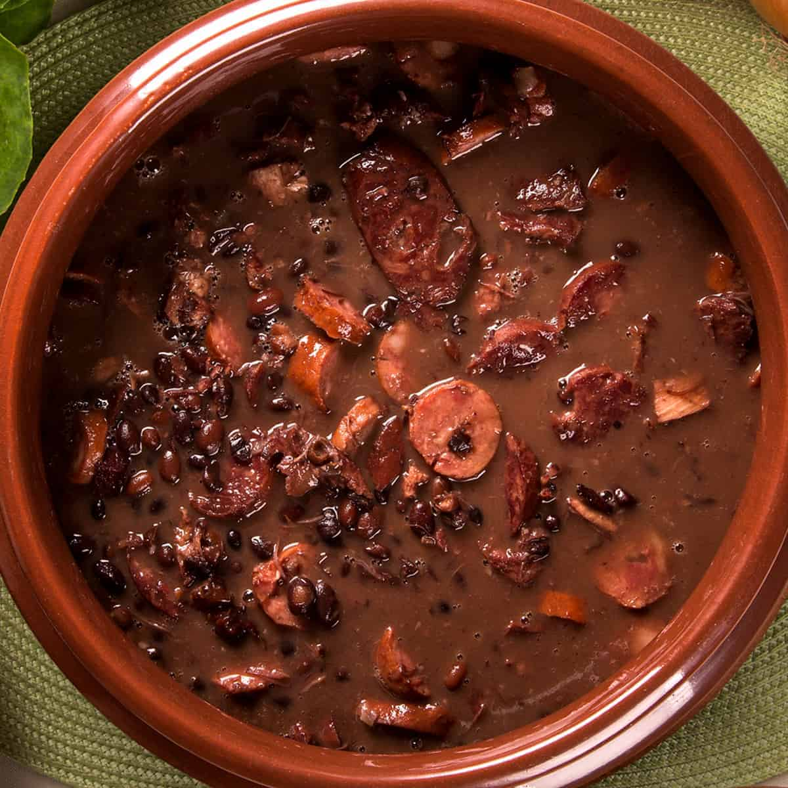

Feijoada

Description
Feijoada is a stew of beans with beef and pork. The name feijoada is derived from feijão, 'bean' in Portuguese. It is widely prepared in the Portuguese-speaking world, with slight variations. The basic ingredients of feijoada are beans and fresh pork or beef. In Brazil, it is usually made with black beans.
ingredients
- 1kg black beans
- 70g pig ears
- 70g pig's feet
- 50g pork loin
- 150g portuguese sausage
- 100g dried meat
- 70g pig's tail
- 100g pork ribs
- 100g paio sausage
- 2 finely chopped onions
- 3 bay leaves
- Black pepper to taste
- 40ml of pinga (alcohol)
- 1 stem of spring onion
- 6 garlic cloves
- 1 or 2 oranges
- Salt
Steps
- Soak the meats for 36 hours or more, change the water several times, if it is hot or summer, place ice on top or in cold layers.
- Cook step by step: hard meat, then soft meat.
- When soft, add the beans and remove the meat.
- Finally season the beans.
- Prepare accompaniments